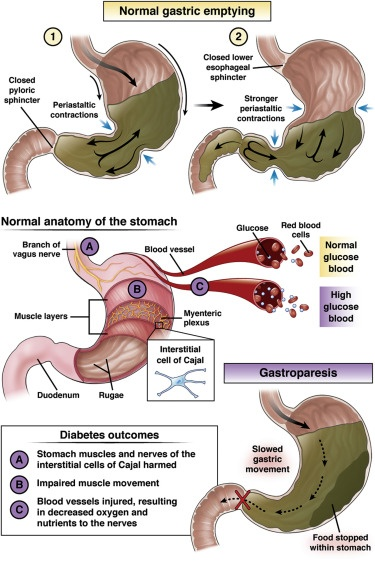

Gastroparesis

SYMPTOMS:
- Vomiting
-
Nausea
-
Abdominal bloating
-
Abdominal pain
-
A feeling of fullness after eating just a few bites
-
Vomiting undigested food eaten a few hours earlier
-
Acid reflux
-
Changes in blood sugar levels
-
Lack of appetite
-
Weight loss and malnutrition
CAUSES:
- It's not always clear what leads to gastroparesis, but in some cases it can be caused by damage to a nerve that controls the stomach muscles (vagus nerve).
-
The vagus nerve helps manage the complex processes in your digestive tract, including signaling the muscles in your stomach to contract and push food into the small intestine. A damaged vagus nerve can't send signals normally to your stomach muscles. This may cause food to remain in your stomach longer, rather than move into your small intestine to be digested.
-
The vagus nerve and its branches can be damaged by diseases, such as diabetes, or by surgery to the stomach or small intestine.
DIAGNOSIS:
- Scintigraphy. This is the most important test used in making a diagnosis of gastroparesis. It involves eating a light meal, such as eggs and toast, that contains a small amount of radioactive material. A scanner that detects the movement of the radioactive material is placed over your abdomen to monitor the rate at which food leaves your stomach.
-
You'll need to stop taking any medications that could slow gastric emptying. Ask your doctor if any of your medications might slow your digestion.
-
Breath tests. For breath tests, you consume a solid or liquid food that contains a substance that your body absorbs. Eventually, the substance can be detected in your breath. Samples of your breath are collected over a few hours and the amount of the substance in your breath is measured. The test can show how fast your stomach empties after consuming food by measuring the amount of the substance in your breath.
TREATMENT
- Treating gastroparesis begins with identifying and treating the underlying condition. If diabetes is causing your gastroparesis, your doctor can work with you to help you control it.